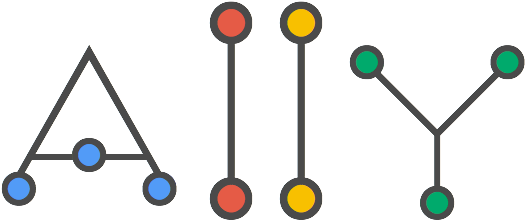

<link rel="import" href="elements.html">

<polymer-element name="a11y-app">
<template>
<style>
  :host {
    display: block;
    font-family: Roboto, "Helvetica Neue", Helvetica, Arial, sans-serif;
  }

  .audit-card {
    position: relative;
    padding: 8px;
    -webkit-transition: all 0.30s ease-out;
    transition: all 0.30s ease-out;
  }

  .audit-card p {
    color: #999;
  }

  .rule-pass {
    color: #009A2D;
  }

  .rule-fail {
    color: #DD4B39;
  }

  .rule-na {
    color: #fda100;
  }

  .audit-form {
    display: block;
    padding-top: 40px;
  }

  .audit-logo {
    display: block;
    clear: both;
    margin-top: 40%;
  }

  .audit-form #auditUrl {
    width: 100%;
  }

  .audit-form paper-button:focus,
  .audit-form paper-button.colored:focus {
    background: #0D47A1;
  }

  paper-button.colored {
    color: #4285f4;
  }

  paper-button[raised].colored {
    background: #4285f4;
    color: #fff;
  }

  core-scaffold {
    position: fixed;
    top: 0;
    right: 0;
    bottom: 0;
    left: 0;
    height: 800px;
  }

  .content {
    background-color: #fff;
    padding: 20px;
  }

  core-scaffold::shadow core-toolbar {
    background: #2196F3;
  }

  core-scaffold[mode=cover]::shadow core-header-panel::shadow #mainContainer {
    left: 120px;
  }

  core-scaffold[mode=cover] .content {
    margin: 20px 100px 20px 0;
  }

  .score.indicator.excellent:before {
    content: '\002713';
  }

  .score.indicator {
    font-weight: bold;
    width: 17px;
    margin-right: 4px;
  }

  .score.excellent {
    background: #009a2d;
  }

  .score.error {
    background: #dd4b39;
  }

  .score.indicator.error:before,
  .score.indicator.warning:before {
    content: '!';
  }

  .score {
    display: inline-block;
    color: #fff;
    text-align: center;
    white-space: nowrap;
  }

  .rule-result {
    margin-left: -10px;
    padding: 4px 10px 5px;
    overflow: hidden;
    transition: background-color .5s;
  }

  .result-group h3 {
    margin: 0 0 6px;
  }

  h3 {
    font-size: 1.5em;
    font-weight: 400;
  }

  .rule-title {
    font-size: 1.2em;
    font-weight: normal;
  }

  .goog-zippy-header {
    display: inline-block;
    height: 20px;
    opacity: 1;
    transition: opacity .5s;
    overflow: hidden;
    padding: 1px 0 0 14px;
    color: #15c;
    margin-left: -5px;
    margin-top: 2px;
  }

  .score.warning {
    background: #fda100;
  }

  .elements-responsible {
    border-left: 5px solid #BBDEFB;
    padding-left: 20px;
  }

  .content h2 {
    font-size: 20px;
  }

  .divider {
    height: 50px;
    margin: 0 auto;
    border-top: 1px solid #B6B6B6;
    margin-top: 50px;
    width: 98%;
  }
</style>


<!-- If Enter is used on the URL input, run audit or clear buttons, handle process execution as needed -->
<core-a11y-keys keys="enter" target="{{$.submitAudit}}" on-keys-pressed="{{beginFormSubmit}}"></core-a11y-keys>

<core-a11y-keys keys="enter" target="{{$.auditUrl}}" on-keys-pressed="{{beginFormSubmit}}"></core-a11y-keys>

<core-a11y-keys keys="enter" target="{{$.clearAuditInput}}" on-keys-pressed="{{clearInput}}"></core-a11y-keys>

<core-animated-pages transitions="cross-fade-all" id="pages">

  <!-- Default view - Allow the user to enter an input URL -->
  <section id="audit-input">
    <form is="ajax-form" on-submitting="{{submitting}}" on-submitted="{{submitted}}" method="POST" action="/api"
          id="searchForm">
      <div vertical layout center>
        <div>
          
        </div>
        <div flex class="audit-form" layout horizontal center center-justified style="width:70%">
          <paper-input-decorator floatingLabel error="A valid URL is required!" autoValidate tabindex="1" label="Enter URL to test for accessibility..." id="auditUrl">
            <input is="core-input" type="text" value="{{auditInputUrl}}" pattern=".+\..+" autofocus>
          </paper-input-decorator>
          <!-- Workaround for ajax-form not picking up decorated input -->
          <input type="text" name="url" value="{{auditInputUrl}}" hidden>
        </div>
        <div class="audit-form" layout horizontal center center-justified>
          <paper-button id="submitAudit" on-click="{{beginFormSubmit}}" raised class="colored">Run Audit</paper-button>
          <paper-button id="clearAuditInput" on-click="{{clearInput}}" raised>Clear</paper-button>
        </div>
      </div>
    </form>
  </section>

  <!-- Results/Audit summary view -->
  <section id="audit-results">

    <core-scaffold>

      <core-header-panel navigation flex mode="seamed">
        <core-toolbar style="background-color: #1976D2; color: #fff;">A11y</core-toolbar>
        <core-menu>
          <core-item on-click="{{resetWorld}}" icon="send" label="New Audit"></core-item>
        </core-menu>
      </core-header-panel>

      <div tool>Accessibility Summary</div>

      <div class="content">

        <h2>For {{auditInputUrl}}</h2>

        <p>{{status}}</p>

        <paper-spinner active id="spinner"></paper-spinner>

        <!-- Templates for each of failed, passed and n/a audit results -->

        <!-- Failed -->
        <h3 class="severity">
          <span class="score indicator error"></span>{{failures.length}} Issues Found
        </h3>

        <template bind repeat="{{audit in failures}}">
          <template bind if="{{audit.result === 'FAIL'}}">
            <div class="audit-card audit-card__failure">

              <div class="rule-result">
                <h4 class="rule-title">
                  <core-icon class="rule-fail" icon="cancel"></core-icon>
                  {{audit.heading}}
                </h4>
                {{audit.warning}}
              </div>

              <strong>Elements responsible:</strong>

              <div class="elements-responsible">
                <template bind repeat="{{el in audit.elements | split}}">
                  <p>{{el}}</p>
                </template>
              </div>

              <!-- TODO: Link each failure up to the specific Audit-Rule fix rather than just
              the main page -->
              <a class="show-how-to-fix goog-zippy-header goog-zippy-collapsed"
                 href="https://github.com/GoogleChrome/accessibility-developer-tools/wiki/Audit-Rules">
                <span class="show">Show how to fix</span>
              </a>
              </p>
            </div>
          </template>
        </template>

        <!-- Passed -->
        <div class="divider"></div>
        <h3 class="severity">
          <span class="score indicator excellent"></span>{{passes.length}} Passed Rules
        </h3>

        <template bind repeat="{{audit in passes}}">

          <template bind if="{{audit.result === 'PASS'}}">
            <div class="audit-card audit-card__success">

              <div class="rule-result">
                <h4 class="rule-title">
                  <core-icon class="rule-pass" icon="check-box"></core-icon>
                  {{audit.heading}}
                </h4>
                {{audit.warning}}
              </div>
            </div>
          </template>
        </template>


        <!-- Not applicable -->
        <div class="divider"></div>
        <h3 class="severity">
          <span class="score indicator warning"></span>{{na.length}} Not Applicable Rules
        </h3>

        <template bind repeat="{{audit in na}}">

          <template bind if="{{audit.result === 'NA'}}">
            <div class="audit-card audit-card__success">
              <div class="rule-result">
                <h4 class="rule-title">
                  <core-icon class="rule-na" icon="info"></core-icon>
                  {{audit.heading}}
                </h4>
                {{audit.warning}}
              </div>
            </div>
          </template>
        </template>
        <!--end-->

      </div>

    </core-scaffold>


  </section>
</core-animated-pages>
</template>
<script>
  Polymer({
    /**
     * Input URL to conduct the audit on
     * @property auditInputUrl
     * @type String
     */
    auditInputUrl: '',
    /**
     * Raw audit report, returned from /api
     * @property audits
     * @type Array
     */
    audits: [],
    /**
     * Accessibility tests that have passed
     * @property passes
     * @type Array
     */
    passes: [],
    /**
     * Accessibility tests that were not applicable
     * @property na
     * @type Array
     */
    na: [],
    /**
     * Accessibility tests that did not pass
     * @property failures
     * @type Array
     */
    failures: [],
    /**
     * String status of the audit. Currently one of
     * Submission failed, Running audit..., Ready or empty string.
     * @property status
     * @type string
     */
    status: 'Ready',
    /**
     * Simple Polymer filter for splitting a string based on line
     * endings. Used to split the elements/DOM results supplied as
     * a string from the raw response the A11y module supplies.
     */
    split: function (input) {
      return input.split('\n');
    },
    /**
     * Submit the audit form to begin the audit
     */
    beginFormSubmit: function () {
      var $d = this.$.auditUrl;
      var $v = $d.querySelector('input').validity.valid;
      $d.isInvalid = !$v;
      if (!$d.isInvalid) {
        this.$.searchForm.submit();
      }
    },
    /**
     * Clear the auditUrl input field
     */
    clearInput: function () {
      this.$.auditUrl.value = '';
    },
    /**
     * Parse the Audit API responses into the relevant
     * audits, passes, failures and na arrays for display.
     */
    submitted: function (e) {
      this.status = '';

      if (e.detail.status > 299) {
        this.status = 'Submission failed';
        return;
      }

      var json = JSON.parse(e.detail.response);

      if (json.error) {
        this.status = json.error;
        return;
      }

      this.audits = json.audit;

      this.audits.forEach(function (el) {
        if (el.result === 'PASS') {
          this.passes.push(el);
        }
        if (el.result === 'FAIL') {
          this.failures.push(el);
        }

        if (el.result === 'NA') {
          this.na.push(el);
        }
      }.bind(this));

      this.toggleSpinner();
    },
    /**
     * Reset internal arrays used for storing audit results
     */
    resetStorage: function () {
      this.passes = [];
      this.failures = [];
      this.audits = [];
      this.na = [];
    },
    /**
     * Switch to results view, set intermediate state when the
     * form has started to submit.
     */
    submitting: function () {
      this.resetStorage();
      this.status = 'Running audit...';
      this.togglePage();
    },
    /**
     * Toggle the current view being displayed
     */
    togglePage: function () {
      var up = true;
      var max = 2;
      var p = this.$.pages;
      if (up && p.selected === max || !up && p.selected === 0) {
        up = !up;
      }
      if (up) {
        p.selected += 1;
      } else {
        p.selected -= 1;
      }
    },
    /**
     * Reset the state of app UI, arrays and the current view
     * back to the application defaults
     */
    resetWorld: function () {
      this.toggleSpinner();
      this.clearInput();
      this.resetStorage();
      this.$.pages.selected = 0;
    },
    /**
     * Toggle the active state of the paper-spinner
     */
    toggleSpinner: function () {
      this.$.spinner.active = !this.$.spinner.active;
    }

  });
</script>
</polymer-element>
